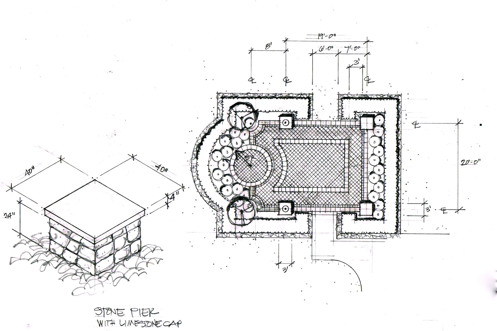
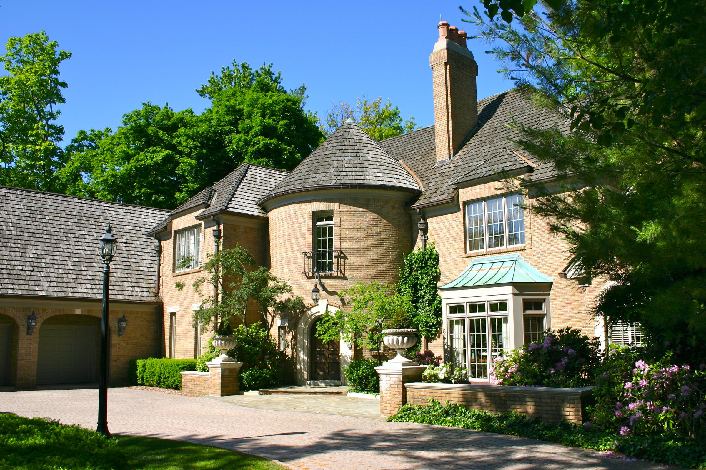

Design Process
From idea through implementation.
The Design Process is the route from idea through implementation and the associated professional fees.

The Design Process is the route from idea through implementation and the associated professional fees.

This phase includes the initial complimentary consultation. This is where the landscape architect becomes familiar with the client, the site & the scope of the project. Design interaction takes place between the client and the landscape architect and the relationship is established. Fees for the Conceptual Design(s) and the Design Development are presented at this point by the landscape architect and approved by the client.
Once the landscape architect is familiar with the site, understands what elements the client is looking to include in the project and is approved to proceed, a site analysis is done and measurements are taken.
It is with these points of reference that the conceptual design(s) are developed. Up to three concepts are developed if there is more than one strong and viable design option for the project. Preliminary construction costs accompany the designs.
The concept(s) and construction costs are reviewed. A design direction and budget are established. It is at this point where the project evolves into Design Development.
This is the phase where the project really begins to come to life. Since the conceptual design direction and budget have been decided, research and engineering is done as required to develop more detailed and specific construction drawings from which the project will be built. Detailed construction costs are refined during this phase and product & material selections are made.
Another meeting is scheduled with the landscape architect and client to review these detailed plans and selections, finalize costs and establish a production schedule.
Reality starts to unfold and the design ideas start to take shape. The landscape architect continuously monitors the implementation of the project to ensure quality of construction and that the design intent is met. Invoices and costs are reviewed and presented to the client for payment.
After construction is complete, the client and landscape architect perform a walk through of the installed project to discuss details that need addressing and to discuss the care and maintenance plan.
Once the client becomes comfortable with the methods of caring for their new investment and are assured that additional assistance is only a phone call away, it is time for the client to enjoy each unique season with their new landscape.